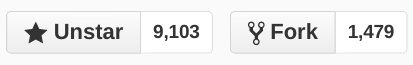
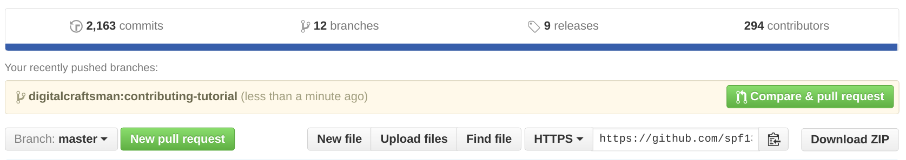
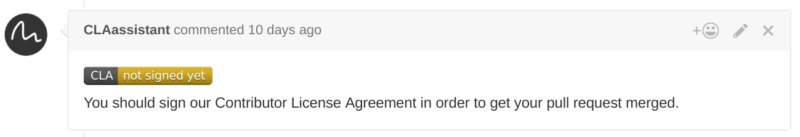
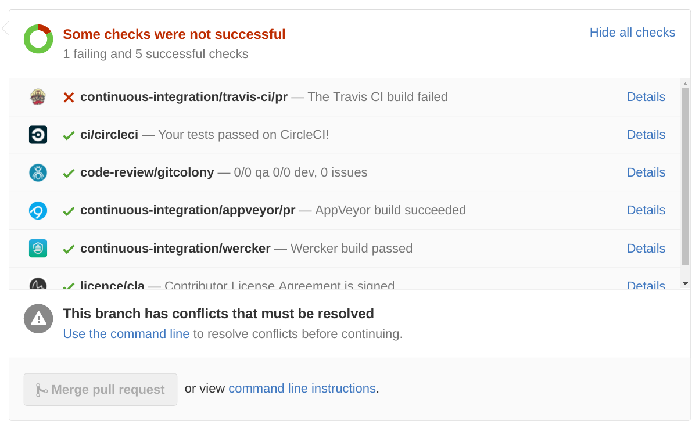

Introduction
Hugo is an open source project and lives by the work of its contributors. Help to make Hugo even more awesome. There are plenty of open issues on GitHub and we need your help.
This tutorial is intended for people who are new to Git, GitHub or open source projects in general. It should help to overcome most of the barriers that newcomers encounter. It describes step by step what you need to do.
For any kind of questions please take a look at our forum.
Install Go
The installation of Go should take only a few minutes. Download the latest stable version of Go and follow the official installation guide.
Let’s confirm the correct installation of Go. Open a terminal (or command line under Windows). Execute go version and you should see the version number of your Go installation. Next, make sure that you setup the GOPATH as described in the installation guide.
You can print the GOPATH with echo $GOPATH. You should see a non-empty string containing a valid path to your Go workspace.
GVM as alternative
More experienced users can use the Go Version Manager, or GVM for short. It allows you to switch between different Go versions on the same machine. Probably you don’t need this feature. But you can easily upgrade to a new released Go version with a few commands.
This is handy if you follow the developement of Hugo over a longer period of time. Future versions of Hugo will usually be compiled with the latest version of Go. Sooner or later you have to upgrade if you want to keep up.
Create an account on GitHub
If you’re going to contribute code, you’ll need to have an account on GitHub. Go to www.github.com/join and set up a personal account.
Install Git on your system
You will need to install Git. This tutorial assumes basic knowledge about Git. Refer to this excellent Git book if you are not sure where to begin. The used terminology will be explained with annotations.
Git is a version control system to track the changes of source code. Hugo depends on smaller third-party packages that are used to extend the functionality. We use them because we don’t want to reinvent the wheel.
Go ships with a sub-command called get that will download these packages for us when we setup our working environment. The source code of the packages is tracked with Git. get will interact with the Git servers of the package hosters in order to fetch all dependencies.
Move back to the terminal and check if Git is already installed. Type in git version and press enter. You can skip the rest of this section if the command returned a version number. Otherwise download the lastest version of Git and follow this installation guide.
Finally, check again with git version if Git was installed successfully.
Git Graphical Front Ends
There are several GUI clients that help you to operate Git. Not all are available for all operating systems and maybe differ in their usage. Thus, so we will use the command line since the commands are everywhere the same.
Install Hub on your system (optional)
Hub is a great tool for working with GitHub. The main site for it is www.hub.github.com. Feel free to install this little Git wrapper.
On a Mac, install Hub using brew:
brew install hub
Create an alias (in Bash) so that typing git actually runs Hub:
echo "alias git='hub'" >> ~/.bash_profile
Confirm the installation:
git version 2.6.3
hub version 2.2.2
Set up your working copy
The working copy is set up locally on your computer. It’s what you’ll edit, compile, and end up pushing back to GitHub. The main steps are cloning the repository and creating your fork as a remote.
Clone the repository
We assume that you’ve set up your GOPATH (see the section above if you’re unsure about this). You should now copy the Hugo repository down to your computer. You’ll hear this called “clone the repo”. GitHub’s help pages give us a short explanation:
When you create a repository on GitHub, it exists as a remote repository. You can create a local clone of your repository on your computer and sync between the two locations.
We’re going to clone the master Hugo repository. That seems counter-intuitive, since you won’t have commit rights on it. But it’s required for the Go workflow. You’ll work on a copy of the master and push your changes to your own repository on GitHub.
So, let’s clone that master repository:
go get -v -u github.com/spf13/hugo
Fork the repository
If you’re not fimiliar with this term, GitHub’s help pages provide again a simple explanation:
A fork is a copy of a repository. Forking a repository allows you to freely experiment with changes without affecting the original project.
Fork by hand
Open the Hugo repository on Github and click on the “Fork” button in the top right.

Now open your fork repository on GitHub and copy the remote url of your fork. You can choose between HTTPS and SSH as protocol that Git should use for the following operations. HTTPS works always if you’re not sure.
Switch back to the terminal and move into the directory of the cloned master repository from the last step.
cd $GOPATH/src/github.com/spf13/hugo
Now Git needs to know that our fork exists by adding the copied remote url:
git remote add <YOUR-GITHUB-USERNAME> <COPIED REMOTE-URL>
Fork with Hub
Alternatively, you can use the Git wrapper Hub. Hub makes forking a repository easy:
git fork
That command will log in to GitHub using your account, create a fork of the repository that you’re currently working in, and add it as a remote to your working copy.
Trust, but verify
Let’s check if everything went right by listing all known remotes:
git remote -v
The output should look similar:
digitalcraftsman git@github.com:digitalcraftsman/hugo.git (fetch)
digitalcraftsman git@github.com:digitalcraftsman/hugo.git (push)
origin https://github.com/spf13/hugo (fetch)
origin https://github.com/spf13/hugo (push)
The contribution workflow
Create a new branch
You should never develop against the “master” branch. The development team will not accept a pull request against that branch. Instead, create a descriptive named branch and work on it.
First, you should always pull the latest changes from the master repository:
git checkout master
git pull
Now we can create a new branch for your additions:
git checkout -b <BRANCH-NAME>
You can check on which branch your are with git branch. You should see a list of all local branches. The current branch is indicated with a little asterisk.
Contributing to the documentation
Perhaps you want to start contributing to the docs. Then you can ignore most of the following steps. You can find the documentation within the cloned repository in the subfolder docs. Change the directory with cd docs. Install the latest release. Or read on and build Hugo from source.
You can start Hugo’s built-in server via hugo server. Browse the documentation by entering http://localhost:1313 in the address bar of your browser. The server automatically updates the page if you change its content.
Building Hugo
While making changes in the codebase it’s a good idea to build the binary to test them:
go build -o hugo main.go
Testing
Sometimes changes on the codebase can cause unintended side effects. Or they don’t work as expected. Most functions have their own test cases. You can find them in files ending with _test.go.
Make sure the commands go test ./... passes, and go build completes.
Formatting
The Go code styleguide maybe is opiniated but it ensures that the codebase looks the same, regardless who wrote the code. Go comes with its own formatting tool. Let’s apply the styleguide to our addtions:
go fmt ./...
Once you made your additions commit your changes. Make sure that you follow our code contribution guidelines:
# Add all changed files
git add --all
git commit --message "YOUR COMMIT MESSAGE"
The commit message should describe what the commit does (e.g. add feature XYZ), not how it is done.
Modify commits
You noticed some commit messages don’t fulfill the code contribution guidelines or you just forget something to add some files? No problem. Git provides the necessary tools to fix such problems. The next two methods cover all common cases.
If you are unsure what a command does leave the commit as it is. We can fix your commits later in the pull request.
Modifying the last commit
Let’s say you want to modify the last commit message. Run the following command and replace the current message:
git commit --amend -m"YOUR NEW COMMIT MESSAGE"
Take a look at the commit log to see the change:
git log
# Exit with q
After making the last commit you may forgot something. There is no need to create a new commit. Just add the latest changes and merge them into the intended commit:
git add --all
git commit --amend
Modifying multiple commits
This is a bit more advanced. Git allows you to rebase commits interactively. In other words: it allows you to rewrite the commit history. Take care of your actions. They can cause unintended changes. Skip this section if you’re not sure!
git rebase --interactive @~6
The 6 at the end of the command represents the number of commits that should be modified. An editor should open and present a list of last six commit messages:
pick 80d02a1 tpl: Add hasPrefix to the template funcs' "smoke test"
pick aaee038 tpl: Sort the smoke tests
pick f0dbf2c tpl: Add the other test case for hasPrefix
pick 911c35b Add "How to contribute to Hugo" tutorial
pick 33c8973 Begin workflow
pick 3502f2e Refactoring and typo fixes
In the case above we should merge the last to commits in the commit of this tutorial (Add "How to contribute to Hugo" tutorial). You can “squash” commits, i.e. merge two or more commits into a single one.
All operations are written before the commit message. Replace “pick” with an operation. In this case squash or s for short:
pick 80d02a1 tpl: Add hasPrefix to the template funcs' "smoke test"
pick aaee038 tpl: Sort the smoke tests
pick f0dbf2c tpl: Add the other test case for hasPrefix
pick 911c35b Add "How to contribute to Hugo" tutorial
squash 33c8973 Begin workflow
squash 3502f2e Refactoring and typo fixes
We also want to rewrite the commits message of the third last commit. We forgot “docs:” as prefix according to the code contribution guidelines. The operation to rewrite a commit is called reword (or r as shortcut).
You should end up with a similar setup:
pick 80d02a1 tpl: Add hasPrefix to the template funcs' "smoke test"
pick aaee038 tpl: Sort the smoke tests
pick f0dbf2c tpl: Add the other test case for hasPrefix
reword 911c35b Add "How to contribute to Hugo" tutorial
squash 33c8973 Begin workflow
squash 3502f2e Refactoring and typo fixes
Close the editor. It should open again with a new tab. A text is instructing you to define a new commit message for the last two commits that should be merged (a.k.a. squashed). Save the file (CTRL+S) and close the editor again.
A last time a new tab opens. Enter a new commit message and save again. Your terminal should contain a status message. Hopefully this one:
Successfully rebased and updated refs/heads/<BRANCHNAME>.
Check the commit log if everything looks as expected. Should an error occur you can abort this rebase with git rebase --abort.
Push commits
To push our commits to the fork on GitHub we need to speficy a destination. A destination is defined by the remote and a branch name. Earlier, the defined that the remote url of our fork is the same as our GitHub handle, in my case digitalcraftsman. The branch should have the same as our local one. This makes it easy to identify corresponding branches.
git push --set-upstream <YOUR-GITHUB-USERNAME> <BRANCHNAME>
Now Git knows the destination. Next time when you to push commits you just need to enter git push.
If you modified your commit history in the last step GitHub will reject your try to push. This is a safety-feature because the commit history isn’t the same and new commits can’t be appended as usual. You can enforce this push explicitly with git push --force.
Open a pull request
We made a lot of progress. Good work. In this step we finally open a pull request to submit our additions. Open the Hugo master repository on GitHub in your browser.
You should find a green button labeld with “New pull request”. But GitHub is clever and probably suggests you a pull request like in the beige box below:

The new page summaries the most important information of your pull request. Scroll down and you find the additions of all your commits. Make sure everything looks as expected and click on “Create pull request”.
Accept the contributor license agreement
Last but not least you should accept the contributor license agreement (CLA). A new comment should be added automatically to your pull request. Click on the yellow badge, accept the agreement and authenticate yourself with your GitHub account. It just takes a few clicks and only needs to be done once.

Automatic builds
We use the Travis CI loop (Linux and OS X) and AppVeyor (Windows) to compile Hugo with your additions. This should ensure that everything works as expected before merging your pull request. This in most cases only relevant if you made changes to the codebase of Hugo.

Above you can see that Travis wasn’t able to compile the changes in this pull request. Click on “Details” and try to investigate why the build failed. But it doesn’t have to be your fault. Mostly, the master branch that we used as foundation for your pull request should build without problems.
If you have questions leave a comment in the pull request. We are willing to assist you.
Where to start?
Thank you for reading this tutorial. Hopefully, we see you again on GitHub. There are plenty of open issues on GitHub. Feel free to open an issue if you think you found a bug or you have a new idea to improve Hugo. We are happy to hear from you.